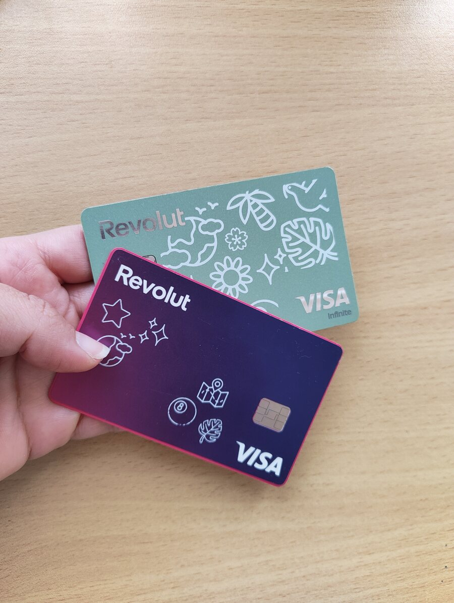

Research · my own account
My 20 October
Revolut has been my bank since 2022. When I moved from Italy to Slovenia I couldn't keep my account, so I chose to open a new one. I started on Premium, then moved up to Metal.
So on 20 October I wasn't a casual user. I lost a lunch break, and a little of my trust, because nothing in the app told me what was happening.

- 01The tillI tried to pay about €2 at the supermarket. Declined, then declined again. No warning in the app.
- 02The ATMI thought cash might work. That failed too, and again there was no notification.
- 03The favourI went back to work and borrowed money from a colleague, which I'd rather not have done.
- 04The searchAt my computer I found out what was going on from Reddit, not from Revolut.
- 05The help chatIt looked like it was trying to help, but it was down too, and the app didn't say so.
- 06The emailAn explanation finally came by email, later. In an app where everything happens in the app, I expected to hear it there.
On Reddit I read about people on holiday with no backup at all. I know it wasn't Revolut's fault, but a bank isn't a chocolate company. When you trust them with your money, the silence is what hurts.